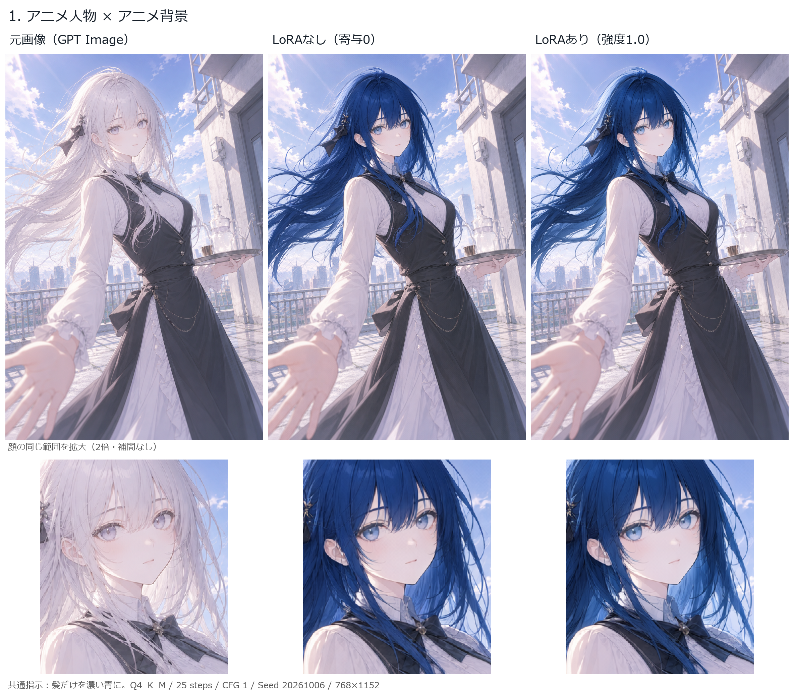
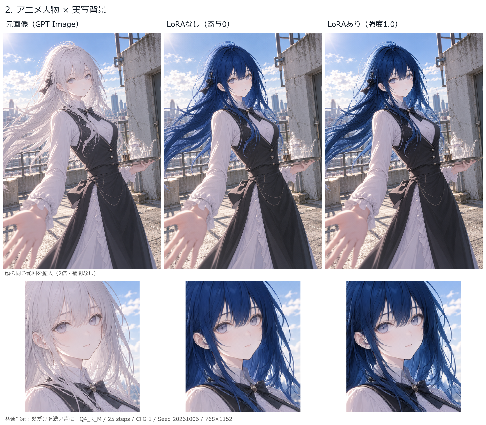
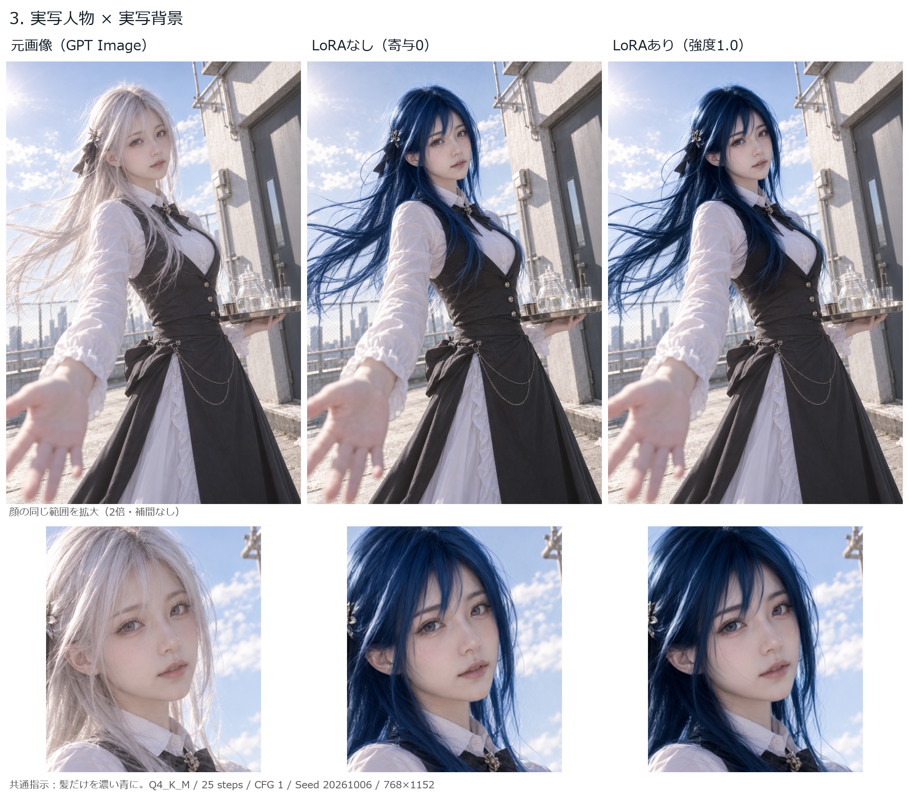

同じGPT Imageベースを、同じSeed・同じ参照処理で編集。変更するのはLoRAの寄与（0 / 1）のみ。指示は「髪だけを濃い青に」。
通常版Q4_K_M / 25 steps / CFG 1 / Seed 20261006 / 入力・出力768×1152 / 1500版。各タイプ1例・1Seedの結果です。
GPT Image原寸 · 比較入力 · LoRAなし · LoRAあり

GPT Image原寸 · 比較入力 · LoRAなし · LoRAあり

GPT Image原寸 · 比較入力 · LoRAなし · LoRAあり